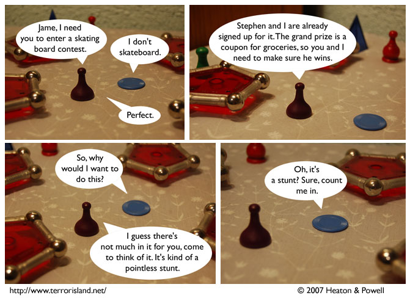

Strip #229
— Wednesday, November 28, 2007
Sometimes skating board contests don’t have very exciting prizes.
Notes, Thoughts, &c.
Ben’s Notes
This strip was inspired by our desire to mention skating boards in the comic again.
By the way, if you look closely at the other customers in the restaurant, you may notice some familiar faces.
Lewis’s Notes
Actually, you won’t notice any faces. Terror Island is a dystopian fantasy about what the world would be like if people didn’t have faces, but still behaved as though they did.
I wrote Lewis’s comments today. -Ben